한줄 요약 — 사용자가 지정한 굴착·덤프·금지영역과 고도지도를 cell로 분해한 뒤 전역 workspace 순서, 국소 dig/dump zone, 개별 bucket trajectory, 장비 이동을 차례로 계획해 15.6×11.5×약 1 m pit에서 380 scoop과 평균 32.08초 cycle을 달성한 대규모 자율 토공 프레임워크다.
1.연구 배경 및 동기
개별 굴착궤적을 수백 회 사이클과 장비 이동으로 확장하는 대규모 작업계획
자율굴착의 실제 생산성은 한 번의 좋은 scoop보다 수백 번의 굴착·선회·덤프·이동을 어떤 순서로 수행하는지에 좌우된다. 큰 pit에서는 장비가 한 자세에서 닿을 수 있는 local workspace가 제한되고, 이미 판 구역과 남은 토량, dump 공간, 주행 가능성에 따라 다음 작업 위치가 바뀐다. 사람이 매 cycle 지시하지 않으려면 설계표면과 현재 고도지도에서 전역 작업순서, 국소 토사이동, bucket trajectory, base navigation을 일관되게 생성해야 한다.
선행 자율 굴착 연구는 고정 base에서 embankment를 파거나 개별 bucket filling을 자동화했지만, 복잡한 target boundary와 obstacle을 가진 대형 현장에서 base relocation까지 포함한 완전 sequence를 충분히 다루지 못했다. 논문은 2.5D 목표·현재 고도, excavation·dump·traversable·forbidden polygon을 입력으로 받아 Boustrophedon cell decomposition과 quotient graph를 만든다. minimum-branch spanning structure와 postorder/dynamic programming으로 workspace 방문순서를 정하고, 각 workspace 내부는 다섯 zone의 토사 흐름으로 세분한다.
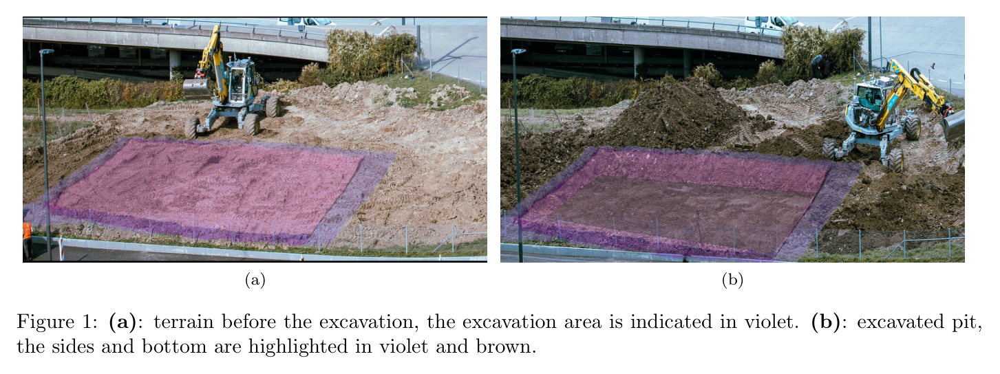
원문 Figure 1 · PDF p.1 — Figure 1: (a): terrain before the excavation, the excavation area is indicated in violet. (b): excavated pit, the sides and bottom are highlighted in violet and brown.
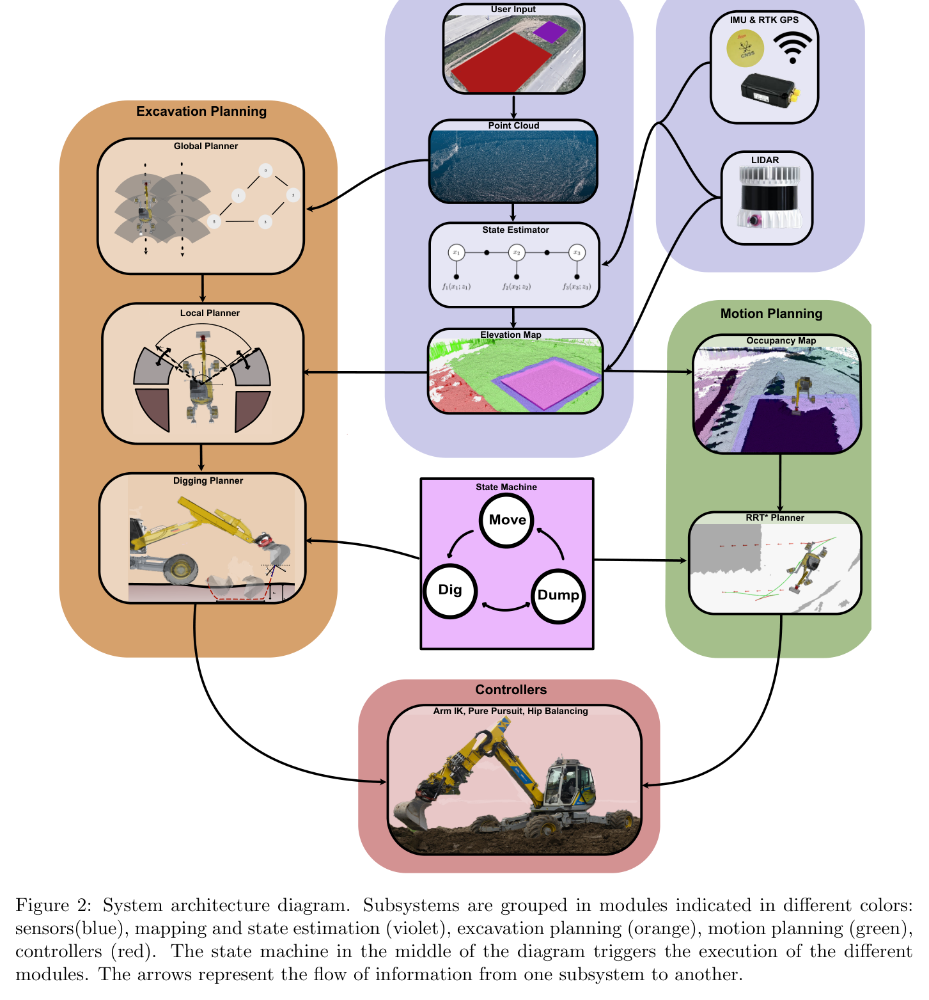
원문 Figure 2 · PDF p.6 — Figure 2: System architecture diagram. Subsystems are grouped in modules indicated in different colors: sensors(blue), mapping and state estimation (violet), excavation planning (orange), motion planning (green), controllers (red). The state machine in the middle of the diagram triggers the execution of the different modules. The arrows represent the flow of information from one subsystem to another.
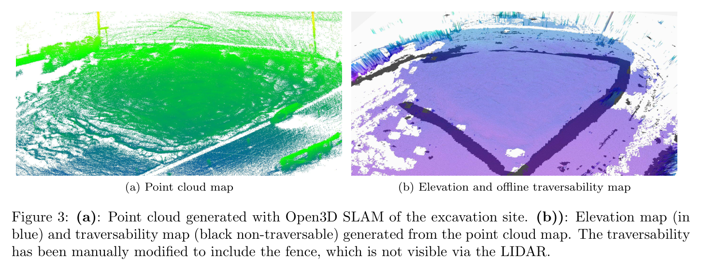
원문 Figure 3 · PDF p.7 — Figure 3: (a): Point cloud generated with Open3D SLAM of the excavation site. (b)): Elevation map (in blue) and traversability map (black non-traversable) generated from the point cloud map. The traversability has been manually modified to include the fence, which is not visible via the LIDAR.
선행 연구의 한계
고정 base의 scoop planner는 작업영역이 커지면 언제 어디로 장비를 옮길지 결정하지 못한다.
최단 주행거리만 줄이면 다음 굴착 접근성과 dump 공간을 잃을 수 있고, 토량 이동만 최적화하면 장비의 비홀로노믹 이동비용을 놓친다.
규칙 기반 bucket trajectory는 토양 반응과 실제 적재량 차이에 따라 목표 volume을 정확히 만들기 어렵다.
대규모 planning을 한 번에 연속 최적화하면 조합적 cell 순서와 연속 궤적, 실시간 지도 갱신이 함께 얽혀 계산이 어렵다.
이 연구의 기여
복잡한 excavation boundary를 Boustrophedon cell과 quotient graph로 분해하고 minimum-branch/postorder/dynamic programming으로 장비 workspace의 전역 순서를 만든다.
각 workspace를 다섯 zone으로 나누고 남은 토량·완성 cell 비율·dump 비용으로 local digging과 dumping을 반복하는 계획기를 제안한다.
FEE 계열 단순 soil-volume simulator와 Bayesian optimization으로 penetration·drag·closing parameter를 목표 bucket volume에 맞춘다.
Hermite in-air arm motion, RRT* Reeds-Shepp base navigation, pure tracking, 1 Hz elevation update를 통합한다.
15.6×11.5×약 1 m pit, 380 scoop, 약 300톤 작업을 4시간 25분 완전 자율로 수행해 cycle·효율·정밀도·실패를 정량 보고한다.
2.방법론 및 시스템 구성
사용자는 Google Earth Pro 등에서 target excavation polygon, dump region, traversable area, forbidden region과 목표 고도를 지정한다. 초기 LiDAR scan은 Open3D SLAM으로 정합해 5 cm voxel cloud를 만들고 0.1 m grid map으로 변환한다. Boustrophedon decomposition은 obstacle과 boundary 변화에 따라 cell을 만들며 quotient graph가 cell adjacency를 표현한다. 분기 수가 작은 spanning tree를 고르고 root에서 postorder로 탐색해 뒤쪽 cell을 먼저 완료하도록 한다.
개별 dig trajectory는 penetration, drag, closing 세 phase다. Bayesian optimization은 20개 random query 후 10개 refinement, 총 30회 objective evaluation으로 목표 volume에 맞는 파라미터를 찾는다. 비교 grid search는 약 150회가 필요하다. in-air arm path는 Hermite curve와 0.3 m ground clearance를 사용하고 dumping objective는 이동거리·높이·자세 변화를 가중합한다. base 이동은 OMPL RRT*의 Reeds-Shepp connection과 지도 위험비용을 사용하며 0.5~5초 범위 계획을 최대 10회 재시도한다.
처리 파이프라인
1
현장 정의와 초기 2.5D mapping
사용자가 excavation/dump/traversable/forbidden layers를 지정한다. OS0-128 LiDAR와 Open3D SLAM으로 5 cm voxel map을 만들고 10 cm elevation grid, Graph-MSF state estimate에 정렬한다.
HEAP의 reach annulus와 front geometry로 digging pose 후보를 만든다. local workspace를 다섯 토사 구역으로 나누고 remaining volume, 0.1 m height error cell 비율, dump cost α=4에 따라 다음 dig/dump를 고른다.
4
Bayesian optimization bucket trajectory
penetration depth·drag distance·closing timing 등 trajectory parameter를 soil-volume simulator에 넣는다. 20 random+10 refinement 평가로 목표 약 0.6 m³에 가까운 scoop를 찾고 phase trajectory를 생성한다.
5
arm transfer와 base navigation
Hermite curve가 bucket ground clearance 0.3 m를 유지하며 dig와 dump를 연결한다. OMPL RRT*는 Reeds-Shepp curve, 길이·reverse·turning cost를 사용해 장비 pose 사이를 계획하고 실패 시 최대 10회 재시도한다.
6
실행·재측량·종료
joint PID와 path follower가 명령을 실행하고 elevation map을 갱신한다. local completion을 확인해 다음 workspace/cell로 이동하며, 전체 target surface가 기준을 만족할 때 전역 sequence를 종료한다.
원문 수식과 의미
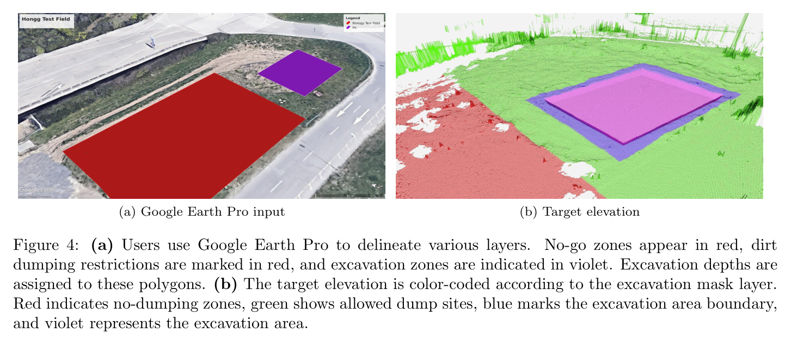
원문 Figure 4 · PDF p.8 — Figure 4: (a) Users use Google Earth Pro to delineate various layers. No-go zones appear in red, dirt dumping restrictions are marked in red, and excavation zones are indicated in violet. Excavation depths are assigned to these polygons. (b) The target elevation is color-coded according to the excavation mask layer. Red indicates no-dumping zones, green shows allowed dump sites, blue marks the excavation area boundary, and violet represents the excavation area.
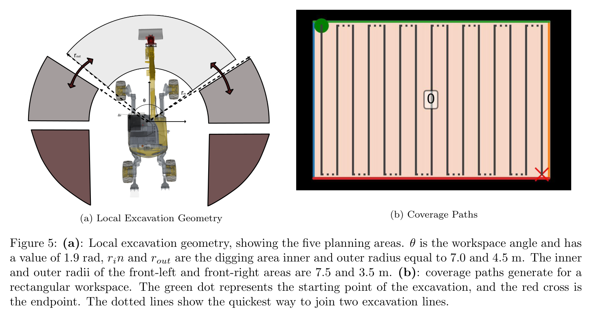
원문 Figure 5 · PDF p.9 — Figure 5: (a): Local excavation geometry, showing the five planning areas. θ is the workspace angle and has a value of 1.9 rad, rin and rout are the digging area inner and outer radius equal to 7.0 and 4.5 m. The inner and outer radii of the front-left and front-right areas are 7.5 and 3.5 m. (b): coverage paths generate for a rectangular workspace. The green dot represents the starting point of the excavation, and the red cross is the endpoint. The dotted lines show the quickest way to join two excavation lines.
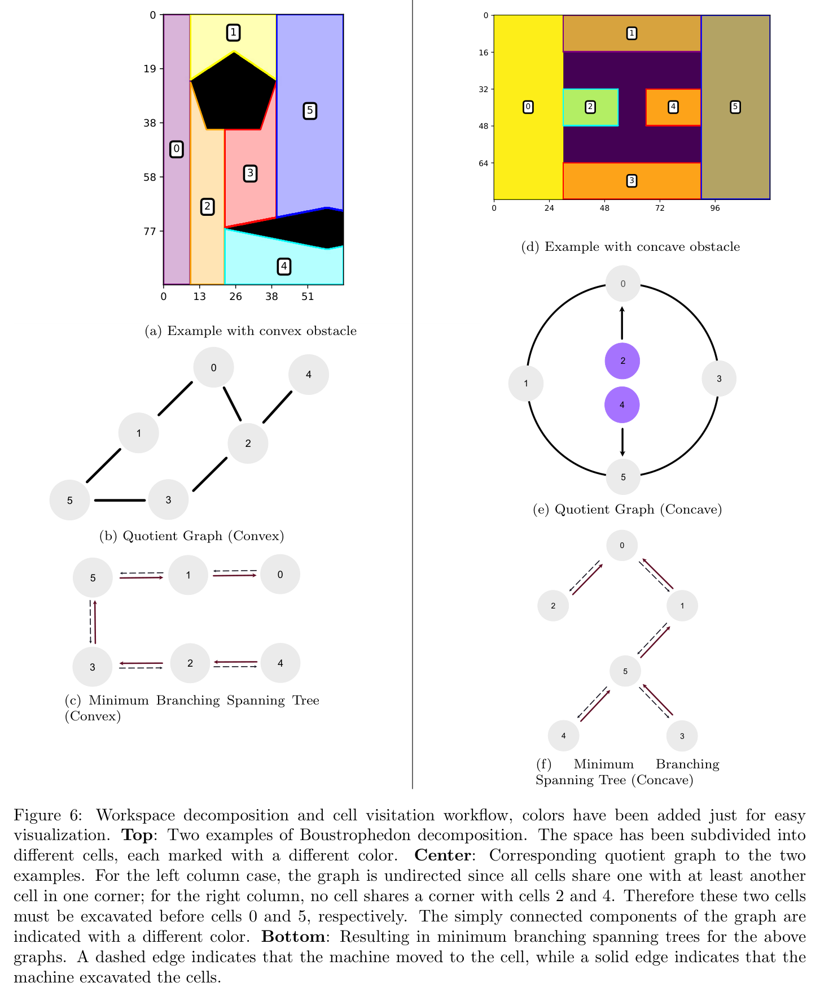
원문 Figure 6 · PDF p.10 — Figure 6: Workspace decomposition and cell visitation workflow, colors have been added just for easy visualization. Top: Two examples of Boustrophedon decomposition. The space has been subdivided into different cells, each marked with a different color. Center: Corresponding quotient graph to the two examples. For the left column case, the graph is undirected since all cells share one with at least another cell in one corner; for the right column, no cell shares a corner with cells 2 and 4. Therefore these two cells must be excavated before cells 0 and 5, respectively. The simply connected components of the graph are indicated with a different color. Bottom: Resulting in minimum branching spanning trees for the above graphs. A dashed edge indicates that the machine moved to the cell, while a solid edge indicates that the machine excavated the cells.
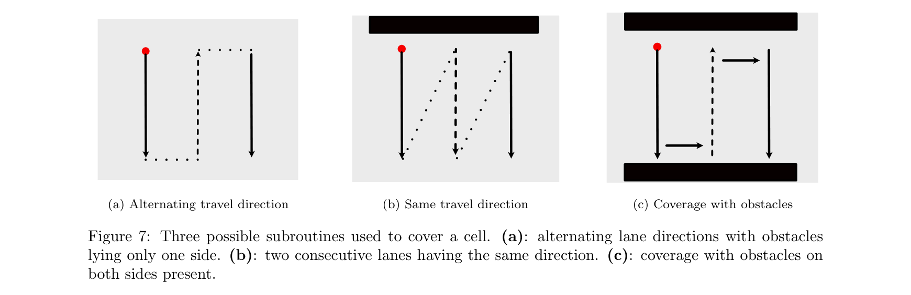
원문 Figure 7 · PDF p.11 — Figure 7: Three possible subroutines used to cover a cell. (a): alternating lane directions with obstacles lying only one side. (b): two consecutive lanes having the same direction. (c): coverage with obstacles on both sides present.
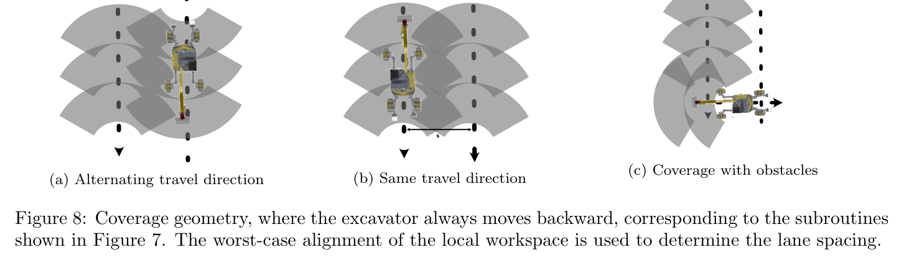
원문 Figure 8 · PDF p.11 — Figure 8: Coverage geometry, where the excavator always moves backward, corresponding to the subroutines shown in Figure 7. The worst-case alignment of the local workspace is used to determine the lane spacing.
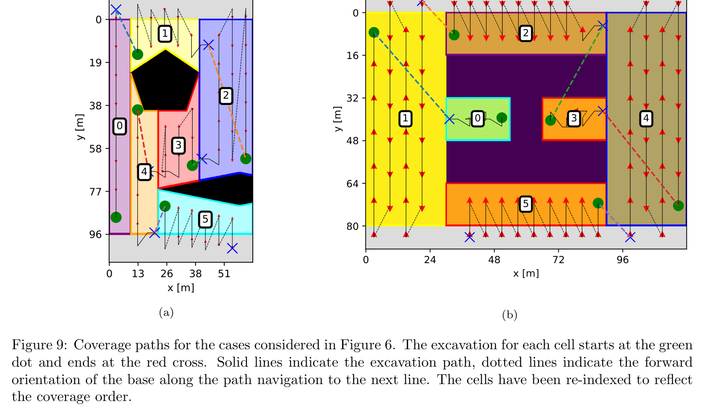
원문 Figure 9 · PDF p.12 — Figure 9: Coverage paths for the cases considered in Figure 6. The excavation for each cell starts at the green dot and ends at the red cross. Solid lines indicate the excavation path, dotted lines indicate the forward orientation of the base along the path navigation to the next line. The cells have been re-indexed to reflect the coverage order.
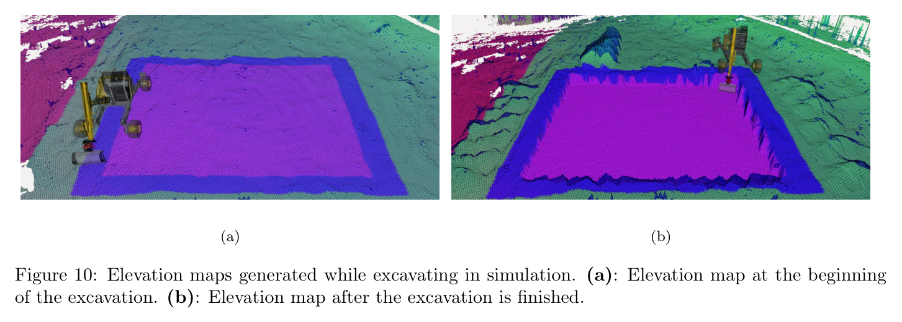
원문 Figure 10 · PDF p.13 — Figure 10: Elevation maps generated while excavating in simulation. (a): Elevation map at the beginning of the excavation. (b): Elevation map after the excavation is finished.
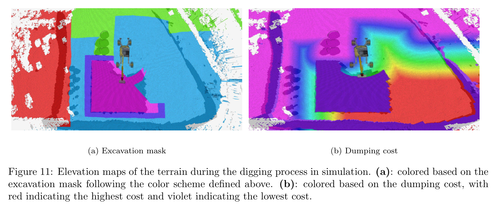
원문 Figure 11 · PDF p.14 — Figure 11: Elevation maps of the terrain during the digging process in simulation. (a): colored based on the excavation mask following the color scheme defined above. (b): colored based on the dumping cost, with red indicating the highest cost and violet indicating the lowest cost.
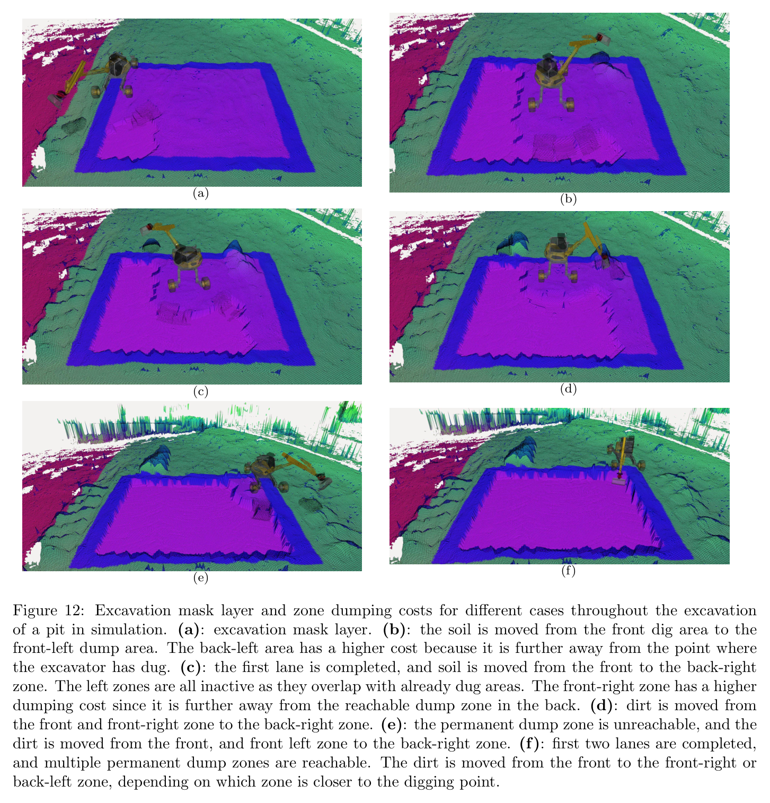
원문 Figure 12 · PDF p.15 — Figure 12: Excavation mask layer and zone dumping costs for different cases throughout the excavation of a pit in simulation. (a): excavation mask layer. (b): the soil is moved from the front dig area to the front-left dump area. The back-left area has a higher cost because it is further away from the point where the excavator has dug. (c): the first lane is completed, and soil is moved from the front to the back-right zone. The left zones are all inactive as they overlap with already dug areas. The front-right zone has a higher dumping cost since it is further away from the reachable dump zone in the back. (d): dirt is moved from the front and front-right zone to the back-right zone. (e): the permanent dump zone is unreachable, and the dirt is moved from the front, and front left zone to the back-right zone. (f): first two lanes are completed, and multiple permanent dump zones are reachable. The dirt is moved from the front to the front-right or back-left zone, depending on which zone is closer to the digging point.
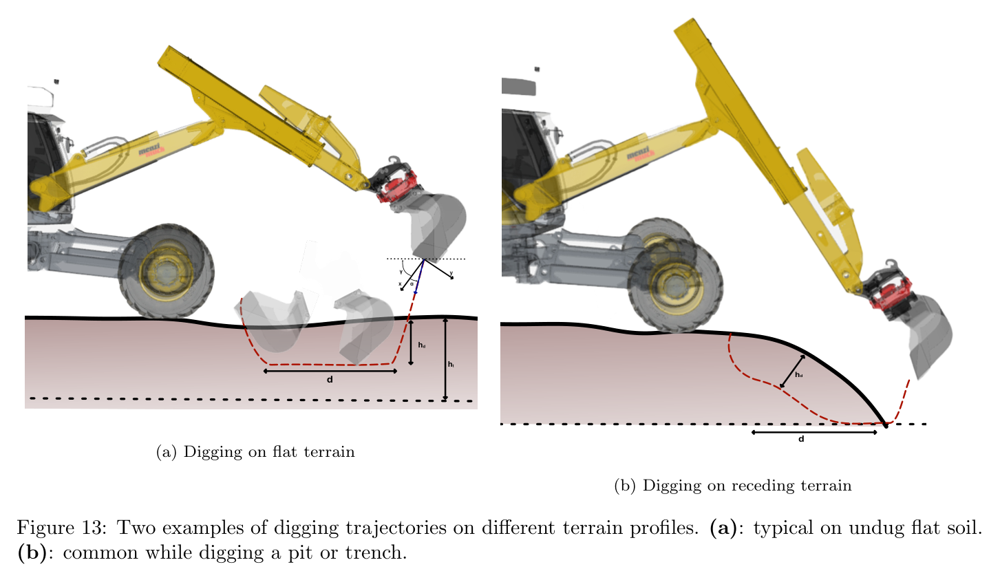
원문 Figure 13 · PDF p.16 — Figure 13: Two examples of digging trajectories on different terrain profiles. (a): typical on undug flat soil. (b): common while digging a pit or trench.
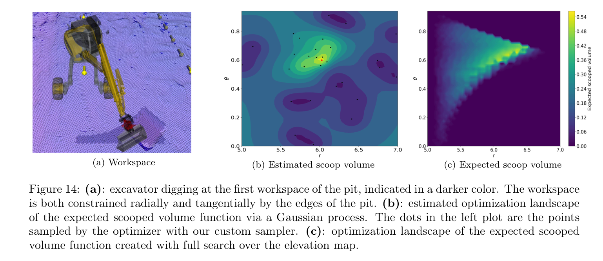
원문 Figure 14 · PDF p.17 — Figure 14: (a): excavator digging at the first workspace of the pit, indicated in a darker color. The workspace is both constrained radially and tangentially by the edges of the pit. (b): estimated optimization landscape of the expected scooped volume function via a Gaussian process. The dots in the left plot are the points sampled by the optimizer with our custom sampler. (c): optimization landscape of the expected scooped volume function created with full search over the elevation map.
원문 Figure 16 · PDF p.19 — Figure 16: The RRT* uses an occupancy map to check the feasibility of the path. Both images are generated in simulation. (a): the occupancy map is generated by integrating the latest elevation map information. Note how the pit and dumping piles are marked as untraversable. (b): the generated plan is shown in green (forward moving) and red (backward moving). The excavator is able to navigate around the pit and reach the last lane.
3.핵심 기술
cell graph에서 장비 workspace 순서를 만드는 전역계획
Boustrophedon은 pit을 cell과 quotient graph로 바꾸고 postorder로 안쪽부터 처리한다. orientation optimization은 고정 zig-zag보다 coverage를 높인다.
angle optimization 후 coverage는 benchmark별 0.972~0.991 수준이다.
분기 수 최소화와 postorder가 작업순서의 조합문제를 graph 문제로 축소한다.
coverage·workspace 수·path length 사이 trade-off를 외부 objective로 조절한다.
30회 평가로 목표 scoop를 맞추는 Bayesian optimization
soil simulator의 기하 volume을 black-box로 삼아 BO가 trajectory parameter를 찾는다. 30회 평가로 약 0.06 m³, nominal 0.6 m³의 약 10% 오차에 도달해 150회 grid search보다 적게 호출한다.
20 random evaluations 뒤 10 refinement evaluations를 수행한다.
bucket nominal volume은 0.6 m³, 최대 가정은 0.8 m³다.
trajectory parameter에는 penetration·drag·closing phase와 angle 범위가 포함된다.
계층 간 상태 공유로 구현한 수백 cycle 폐루프
cell/workspace, zone/remaining volume, scoop, base pose가 같은 elevation map으로 연결된다. 매 cycle 실제 지형을 다시 측량해 simulator 오차를 보정한 구조가 380 scoop 장기 실행을 가능하게 했다.
최종 pit에서 380 scoops를 수행했다.
평균 bucket volume은 0.45±0.16 m³로 nominal 0.6 m³보다 작다.
RRT* navigation은 거리 약 0.5~60 m query에서 0.5~5초 계획시간을 쓰고 필요하면 최대 10회 재시도한다.
최종 pit은 인간 개입 없이 연속 수행하고 각 cycle의 dig, arm-to-dig, dump, path/drive 시간을 기록한다.
굴착 전후 reference survey와 system elevation map을 비교해 bias·absolute error·volume·efficiency를 산출한다.
비교 기준
workspace orientation optimization 적용/미적용
Bayesian optimization 30 evaluations와 grid search 약 150 evaluations
전방작업 efficiency, loose-soil 포함 전체 efficiency, in-situ 전체 efficiency
reference update 전후의 surface error
평가 지표
전역 path length, workspace count, cell coverage
target bucket volume error와 objective evaluations
RRT* success rate, plan time, retry 후 실패확률
총 작업시간, cycle time과 단계별 시간, scoop 수·평균체적
처리체적과 m³/h 효율, surface mean bias와 absolute error
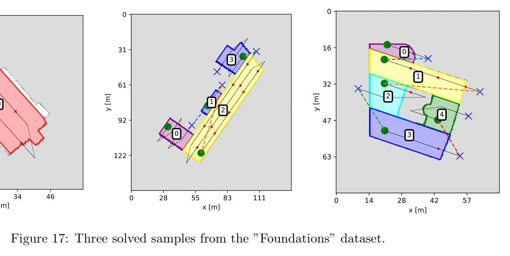
원문 Figure 17 · PDF p.21 — Figure 17: Three solved samples from the ”Foundations” dataset.
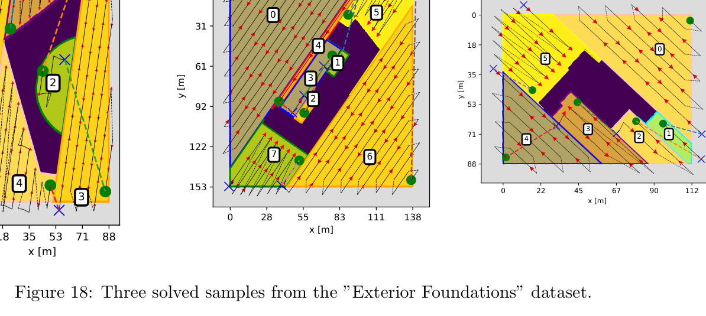
원문 Figure 18 · PDF p.21 — Figure 18: Three solved samples from the ”Exterior Foundations” dataset.
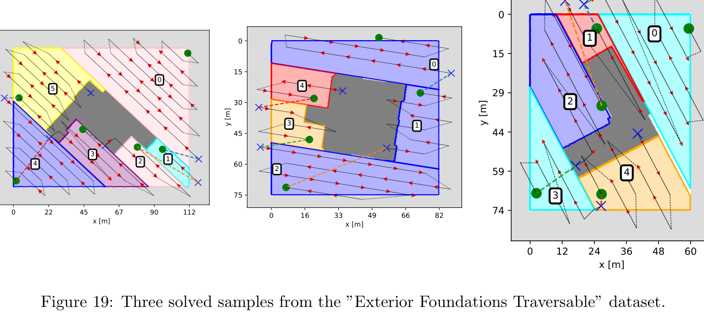
원문 Figure 19 · PDF p.22 — Figure 19: Three solved samples from the ”Exterior Foundations Traversable” dataset.
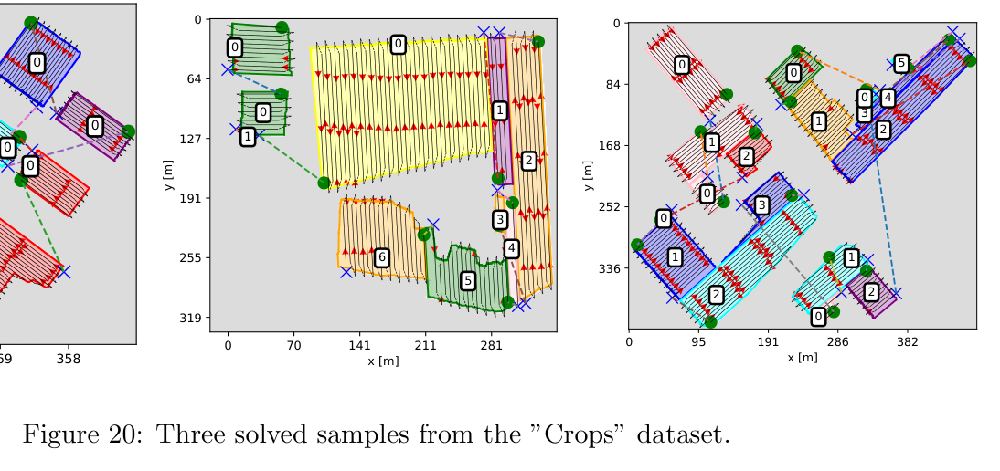
원문 Figure 20 · PDF p.22 — Figure 20: Three solved samples from the ”Crops” dataset.
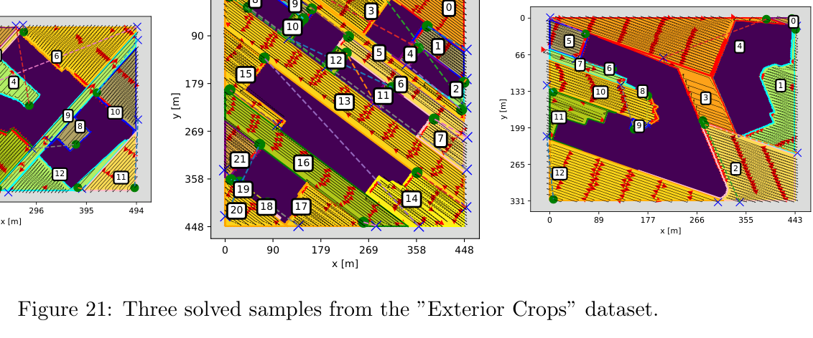
원문 Figure 21 · PDF p.22 — Figure 21: Three solved samples from the ”Exterior Crops” dataset.
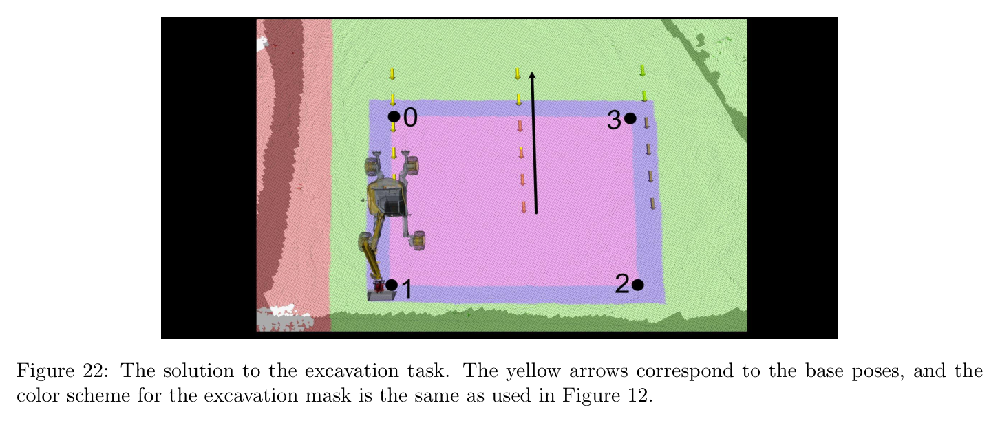
원문 Figure 22 · PDF p.23 — Figure 22: The solution to the excavation task. The yellow arrows correspond to the base poses, and the color scheme for the excavation mask is the same as used in Figure 12.
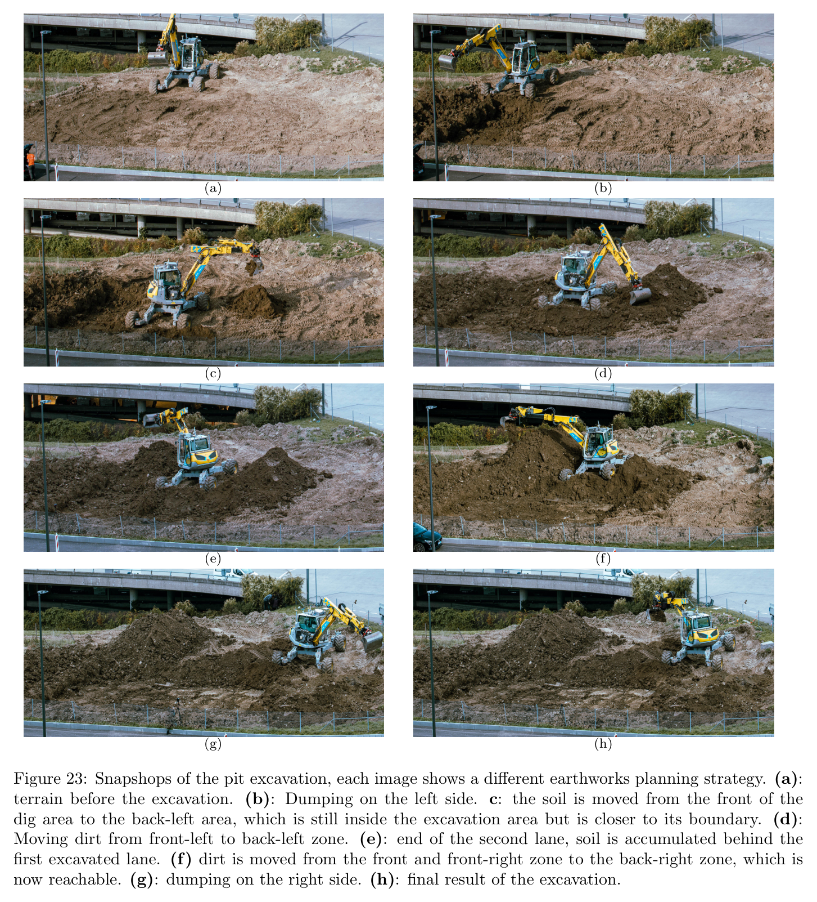
원문 Figure 23 · PDF p.24 — Figure 23: Snapshops of the pit excavation, each image shows a different earthworks planning strategy. (a): terrain before the excavation. (b): Dumping on the left side. c: the soil is moved from the front of the dig area to the back-left area, which is still inside the excavation area but is closer to its boundary. (d): Moving dirt from front-left to back-left zone. (e): end of the second lane, soil is accumulated behind the first excavated lane. (f) dirt is moved from the front and front-right zone to the back-right zone, which is now reachable. (g): dumping on the right side. (h): final result of the excavation.
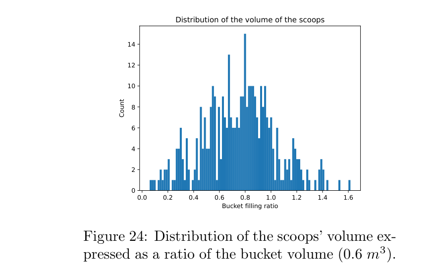
원문 Figure 24 · PDF p.25 — Figure 24: Distribution of the scoops’ volume ex- pressed as a ratio of the bucket volume (0.6 m3).
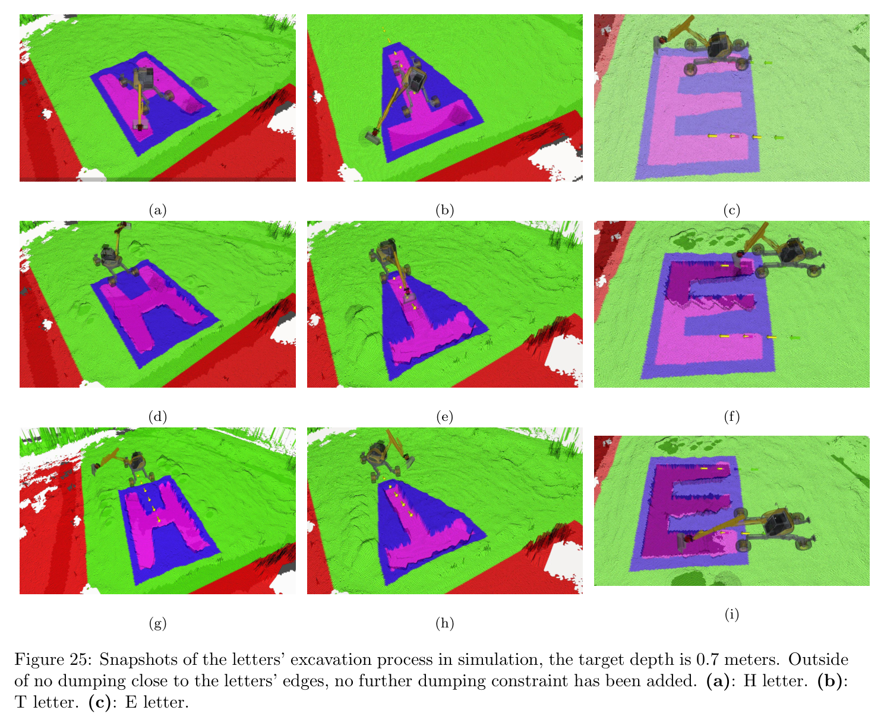
원문 Figure 25 · PDF p.26 — Figure 25: Snapshots of the letters’ excavation process in simulation, the target depth is 0.7 meters. Outside of no dumping close to the letters’ edges, no further dumping constraint has been added. (a): H letter. (b): T letter. (c): E letter.
핵심 결과 해석
angle optimization 전 coverage는 Foundations 0.944±0.087, Exterior 0.952, traversable Exterior 0.960, Crops 0.912, Exterior+Crops 0.782였고, 적용 후 각각 0.982, 0.972, 0.978, 0.991, 0.982로 상승했다. 복합 map의 0.20 개선이 고정 sweep 방향의 손실을 보여준다.
현장 pit은 4시간 25분, 380 scoops, 평균 cycle 32.08±5.47초, bucket 0.45±0.16 m³였다. dig는 14.13±3.38초로 누적 1시간 51분, arm-to-dig 8.04초, dump 9.91초였다. 약 30초인 인간 cycle에 근접한다.
전방 loose volume은 142.47 m³와 42.70 m³/h, 전체 loose-soil은 158.77 m³와 35.95 m³/h, 전체 in-situ는 142.47 m³와 32.35 m³/h였다. reference update 뒤 mean bias는 -3.5→-1.3 cm, absolute error는 9.7→7.2 cm로 개선됐다.
정량 결과
평가 항목
정량 결과
조건·맥락
원문 근거
복합 map coverage
0.782 → 0.982
Exterior+Crops, workspace angle optimization 미적용 대비 적용
PDF p.23
Bayesian digging 오차
약 0.06 m³
30 evaluations, nominal 0.6 m³의 약 10%; grid search 약 150 evaluations
PDF p.17
RRT* navigation
단일 성공률 78.7%, 10회 후 실패확률 <3×10^-7
0.5~60 m query, 0.5~5 s planning
PDF p.19
pit 총 작업시간
4 h 25 min
약 15.6×11.5×1 m 현장 pit
PDF p.23
총 scoop 수
380 scoops
refinement용 bucket motion을 제외한 전체 운전
PDF p.24
평균 cycle time
32.08±5.47 s
dig, dispose, 다음 dig를 위한 arm reposition 포함
PDF p.23
평균 bucket volume
0.45±0.16 m³
nominal bucket volume 약 0.6 m³
PDF p.24
dig phase
14.13±3.38 s, 누적 1 h 51 min
380-cycle breakdown
PDF p.25
전방 loose-soil efficiency
142.47 m³, 42.70 m³/h
3 h 20 min front operation
PDF p.25
전체 in-situ efficiency
142.47 m³, 32.35 m³/h
전체 4 h 25 min 기준
PDF p.25
surface accuracy update
mean -3.5→-1.3 cm, absolute 9.7→7.2 cm
reference map correction 전후
PDF p.25
실패 사례와 경계조건
dump space가 부족해지면 local planner가 더 이상 유효한 토사 이동을 찾지 못한다.
zig-zag/cell 구조가 실제 접근 가능한 작업순서를 지나치게 제한해 local planner failure가 발생할 수 있다.
RRT* 단일 query 성공률은 78.7%이므로 retry에 의존하며 독립실패 가정이 현장 상관오류를 완전히 보장하지 않는다.
평균 bucket volume 0.45 m³는 nominal 0.6 m³보다 작아 기하 soil simulator와 실제 토질 차이를 보여준다.
원문 Figure 26 · PDF p.27 — Figure 26: The two feasible simulated plans side by side. (a): Plan that starts at corner 1. The extra base pose necessary to complete the workspace is circled. (b): Plan starting at corner 2.
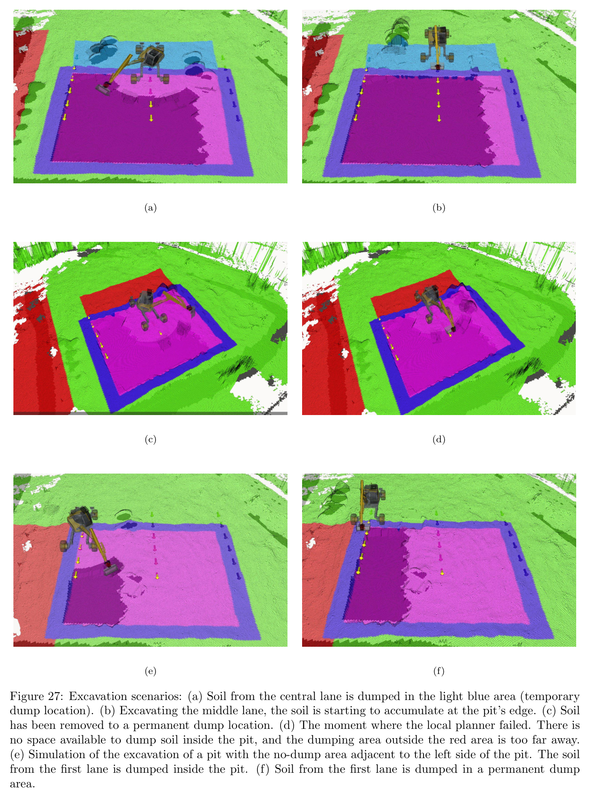
원문 Figure 27 · PDF p.28 — Figure 27: Excavation scenarios: (a) Soil from the central lane is dumped in the light blue area (temporary dump location). (b) Excavating the middle lane, the soil is starting to accumulate at the pit’s edge. (c) Soil has been removed to a permanent dump location. (d) The moment where the local planner failed. There is no space available to dump soil inside the pit, and the dumping area outside the red area is too far away. (e) Simulation of the excavation of a pit with the no-dump area adjacent to the left side of the pit. The soil from the first lane is dumped inside the pit. (f) Soil from the first lane is dumped in a permanent dump area.
5.한계 및 향후 연구
현재 한계
굴착·덤프·금지·주행영역을 사용자가 Google Earth Pro 등으로 수동 지정해야 한다.
Boustrophedon zig-zag와 greedy local policy는 미래 dump capacity·접근성을 장기적으로 공동 최적화하지 않는다.
soil simulator는 물, soil type, compaction, force dynamics를 무시하고 swept volume의 기하 재배치만 계산한다.
Bayesian optimization은 각 scoop를 목표 volume에 맞추지만 전체 scoop 수의 최소화를 직접 최적화하지 않는다.
arm joint PID와 RTK 중심 실행은 contact force·tracking uncertainty를 계획에 충분히 피드백하지 않는다.
향후 연구
navigation과 local excavation을 공동 최적화하거나 RL로 학습해 base relocation과 토사이동의 장기비용을 함께 줄인다.
greedy scoop 선택 대신 future terrain·dump capacity를 상태로 보는 non-greedy policy 또는 model-free hierarchical RL을 개발한다.
전문 CAD/BIM 설계에서 excavation·slope·access·dump 정보를 자동 추출해 수동 Google Earth layer 의존을 줄인다.
실제 soil/load sensing과 학습 bucket-filling controller를 결합해 목표 volume, 매설암, 토질변화를 온라인 반영한다.
GNSS outage와 planner failure를 자동 복구하고 작업자·다른 장비가 있는 동적 현장의 안전 제약을 통합한다.
6.한마디로 정리
핵심 방법은?
Boustrophedon/graph 전역순서→5-zone 국소 토사이동→BO bucket trajectory→Hermite arm transfer→RRT* base navigation을 elevation-map 폐루프로 계층화한다.
핵심 결과는?
12톤 HEAP이 380 scoop, 평균 32.08초 cycle로 약 142 m³ in-situ pit을 4시간 25분에 완성하고 update 후 절대오차 7.2 cm를 기록했다.
이 논문은 다른 ETH 기술을 호출하는 상위 공정 orchestration 계층이다. BO bucket trajectory는 soil-adaptive RL로, pilot 추종은 adaptive controller로, 평지 주행이 불가능한 접근은 LSTP로 교체할 수 있다. dry-stone 공정과 결합하면 dump도 구조재 공급점이 된다.
RL bucket-filling을 local digging primitive로 넣어 BO의 기하 volume 예측과 실제 torque 기반 토질 적응을 결합할 수 있다.
LSTP를 navigation fallback으로 사용하면 gap·soft terrain 때문에 SE(2) RRT*가 실패한 workspace도 접근할 수 있다.
ETHcavation의 사람·차량 추적을 graph edge cost와 안전 gate에 넣어 동적 현장에서도 380-cycle 자율성을 유지할 수 있다.
7.전체 그림·표
본문 핵심 위치에 배치하지 않은 원문 Figure와 Table을 원문 페이지 순서로 수록한다.
원문 Figure 16a · PDF p.18 — Figure 16a depicts an operational example in our test area.
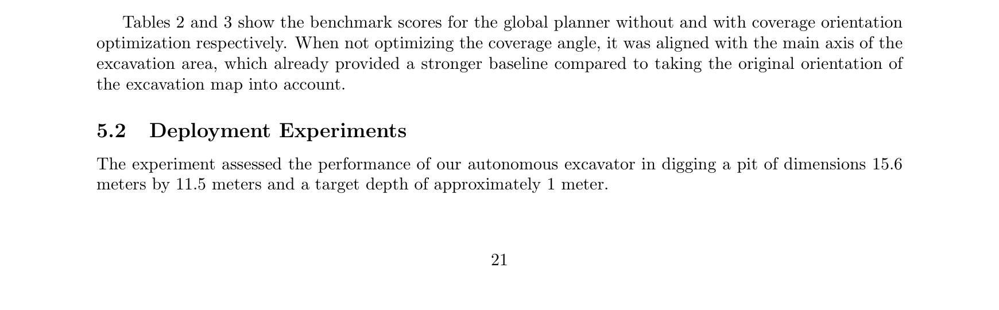
원문 Table s2 · PDF p.21 — Tables 2 and 3 show the benchmark scores for the global planner without and with coverage orientation optimization respectively. When not optimizing the coverage angle, it was aligned with the main axis of the excavation area, which already provided a stronger baseline compared to taking the original orientation of the excavation map into account.
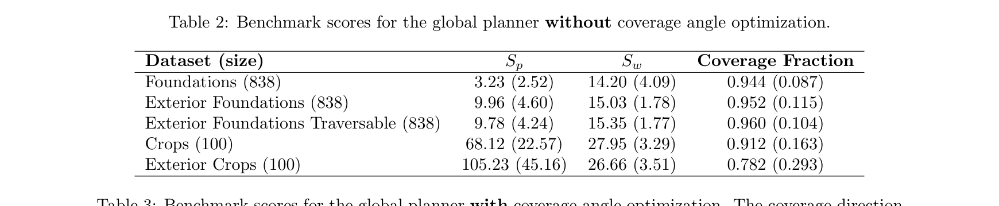
원문 Table 2 · PDF p.23 — Table 2: Benchmark scores for the global planner without coverage angle optimization.
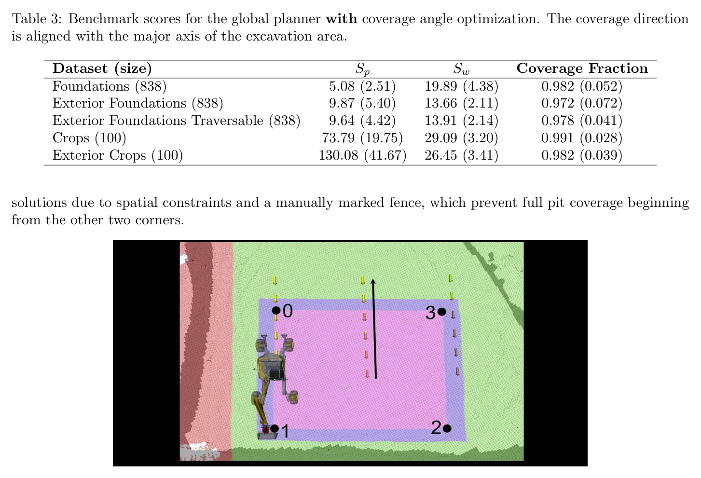
원문 Table 3 · PDF p.23 — Table 3: Benchmark scores for the global planner with coverage angle optimization. The coverage direction is aligned with the major axis of the excavation area.
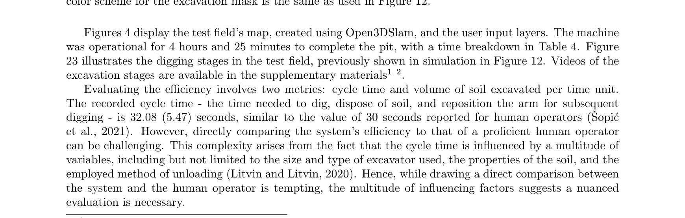
원문 Figure s4 · PDF p.23 — Figures 4 display the test field’s map, created using Open3DSlam, and the user input layers. The machine was operational for 4 hours and 25 minutes to complete the pit, with a time breakdown in Table 4. Figure 23 illustrates the digging stages in the test field, previously shown in simulation in Figure 12. Videos of the excavation stages are available in the supplementary materials1 2. Evaluating the efficiency involves two metrics: cycle time and volume of soil excavated per time unit. The recorded cycle time - the time needed to dig, dispose of soil, and reposition the arm for subsequent digging - is 32.08 (5.47) seconds, similar to the value of 30 seconds reported for human operators (ˇSopi´c et al., 2021). However, directly comparing the system’s efficiency to that of a proficient human operator can be challenging. This complexity arises from the fact that the cycle time is influenced by a multitude of variables, including but not limited to the size and type of excavator used, the properties of the soil, and the employed method of unloading (Litvin and Litvin, 2020). Hence, while drawing a direct comparison between the system and the human operator is tempting, the multitude of influencing factors suggests a nuanced evaluation is necessary.
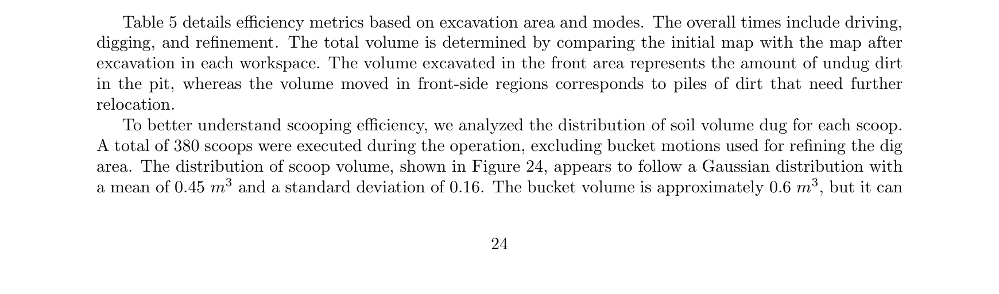
원문 Table 5 · PDF p.24 — Table 5 details efficiency metrics based on excavation area and modes. The overall times include driving, digging, and refinement. The total volume is determined by comparing the initial map with the map after excavation in each workspace. The volume excavated in the front area represents the amount of undug dirt in the pit, whereas the volume moved in front-side regions corresponds to piles of dirt that need further relocation. To better understand scooping efficiency, we analyzed the distribution of soil volume dug for each scoop. A total of 380 scoops were executed during the operation, excluding bucket motions used for refining the dig area. The distribution of scoop volume, shown in Figure 24, appears to follow a Gaussian distribution with a mean of 0.45 m3 and a standard deviation of 0.16. The bucket volume is approximately 0.6 m3, but it can
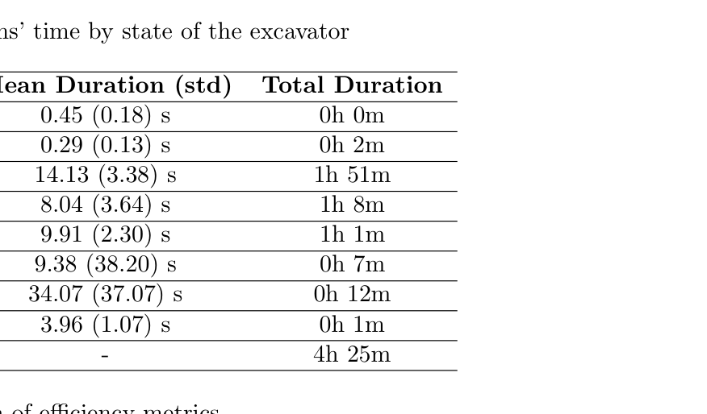
원문 Table 4 · PDF p.25 — Table 4: Breakdown of operations’ time by state of the excavator
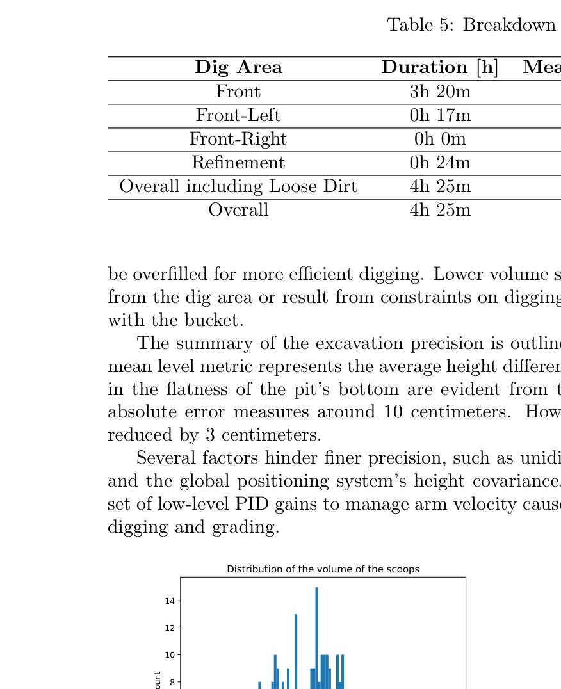
원문 Table 5 · PDF p.25 — Table 5: Breakdown of efficiency metrics
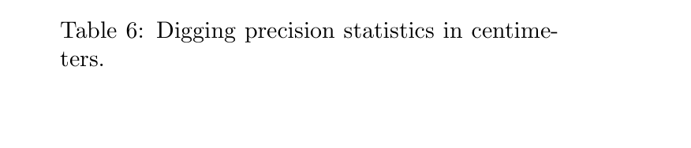
원문 Table 6 · PDF p.25 — Table 6: Digging precision statistics in centime- ters.